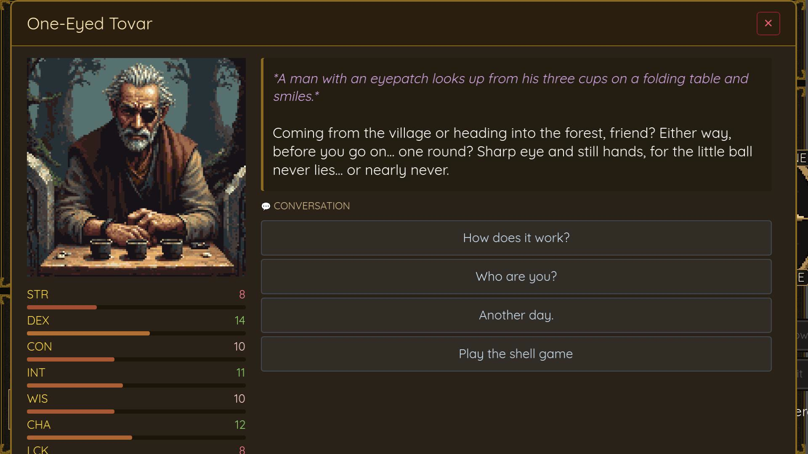
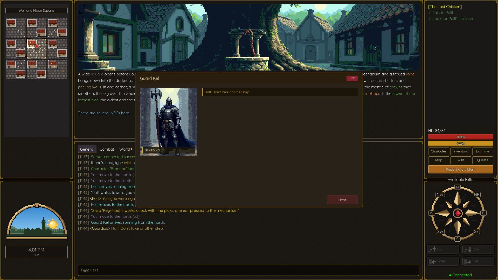
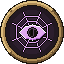
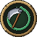
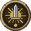
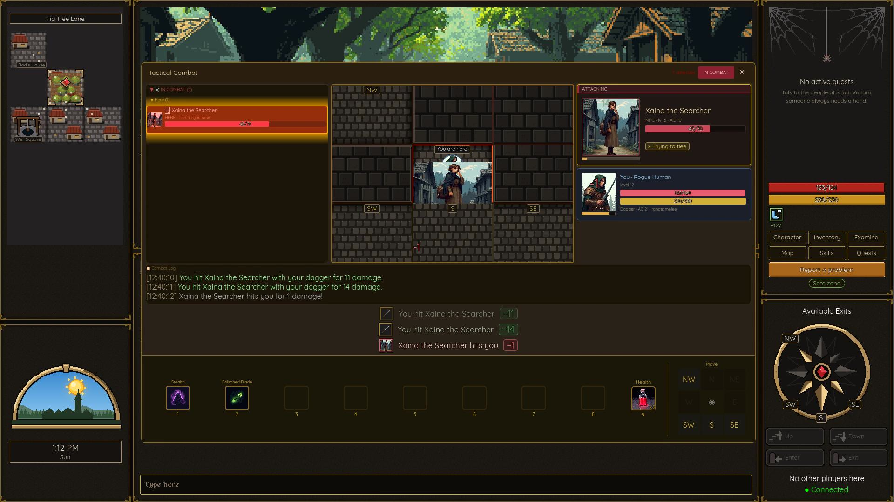
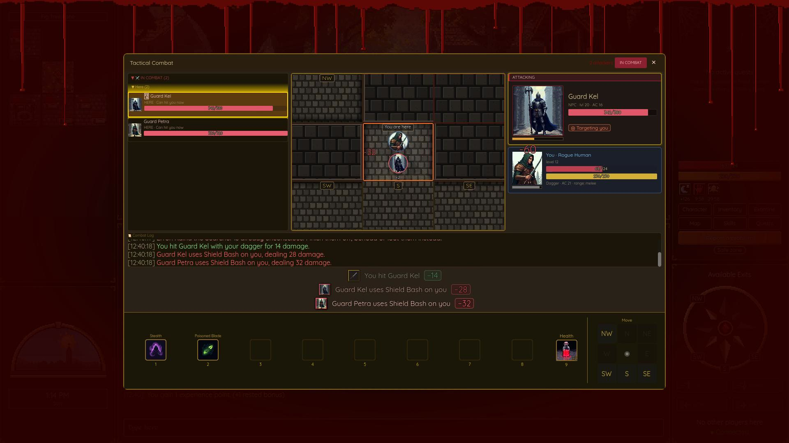

Remember when games had soul?
Before waypoints told you where to walk. Before every NPC was a vending machine. Before “choices” meant picking dialogue that led to the same ending.
There was a time when you had to think. When the world didn't care if you were ready. When getting lost was part of the journey, and discovering a secret felt like uncovering forbidden knowledge.
Modern Mud is a return to that era—rebuilt for those who refuse to forget.
Chapter I
They're not waiting for you
The blacksmith wakes at dawn. He lights his forge, eats breakfast with his daughter, and walks to his shop. He has debts to pay, a rival he despises, and a dream of forging a blade worthy of the old kings. He doesn't care about your quest.
But help him once, and he remembers. Hurt his daughter, and he'll never forget. Kill him, and his apprentice takes over—carrying the memory of what you did to his master.
Chapter II
A living society
NPCs aren't scenery. They have friends who mourn them, enemies who celebrate their fall, and allies who come running when they call for help. Attack the guard, and his partner draws steel. Threaten the merchant, and the tavern keeper—his old friend—refuses you service.
They gossip. They hold grudges. They protect their own. Some will lie to protect a friend. Others will betray their kin for the right price. Learn who trusts whom, and you'll find secrets that brute force could never uncover.


Chapter III
The gods are watching
- AelisBalanceGoddess of the BalanceShe walks among the wounded, binding the body's hurts and seeking the soul's equilibrium.Sworn enemies Eros, VarathServed by Warrior, Explorer, Priest
- NaxorShadowsLord of ShadowsHe moves unseen and keeps what no tongue should speak.Sworn enemies Kaelis, SerionServed by Rogue
- VarathWarForger in the FlameGod of the open battle. Only steel raised in full light proves the worth of those who wield it.Sworn enemies AelisServed by Warrior

ZyraDeceitWeaver of ThreadsWeaver of words and threads. She masters convenient truths and clever lies.Sworn enemies Varath, SerionServed by Rogue, Mage- ErosChaosPatron of ChaosHe laughs at predictable order and blesses those who twist the path.Sworn enemies Aelis, SerionServed by Warrior, Mage

ThaliosDeathKeeper of the CycleHe closes thresholds, gathers the profaned, and returns the dead to their place.Sworn enemies None. Everyone ends up with himServed by Necromancer- KaelisWanderingGod of the WanderingGod of wandering and freedom. His song weighs less than any chain.Sworn enemies NaxorServed by Explorer, Mage

SerionDutyLord of DutyHe forges paladins who accept the weight of the oath.Sworn enemies Eros, Zyra, NaxorServed by Paladin
Eight deities observe from beyond the veil. They see the toll you demanded from a desperate traveler. They witnessed your blade fall on an unconscious foe. They know which oaths you've broken.
Their favor opens paths mortals cannot walk. Their wrath closes them forever. Not every class can serve every god, and some doors, once shut, never open again.
Chapter IV
Claim what's yours
Block the mountain pass and demand tribute from all who wish to cross. Let your enemies pay in gold or blood—the choice is theirs. Build your guild into a force that controls territories, where your banner flies and your laws rule. But remember: what you take, others will come to reclaim.


See it move
Watch
What awaits
- ITactical combat with real consequences
Turn-based decisions in real-time battles. Reposition, retreat, or stand your ground. Defeat leaves you unconscious at your enemy's mercy—but your gear stays yours.
- IIThe Toll System
Block any passage. Name your price. Watch them pay, fight, or flee. Player-driven economy meets player-driven warfare.
- IIINPCs that live, not just exist
They wake, work, dream, and die. They have friends who protect them, enemies who hunt them, and successors who inherit their grudges. Kill one, and watch how the world reacts.
- IVDivine judgment
The pantheon observes. Your alignment with the gods determines which classes you unlock, which factions accept you, and which paths remain hidden.
- VA world that breathes
Day and night shape the land. Moons cycle. Rare events—eclipses, auroras—change more than just the sky.
- VIGuild warfare
Conquer territories. Defend them. Politics, betrayal, and shifting alliances between player factions.
- VIISecrets for those who search
Hidden classes. Mysteries that reveal themselves only to the persistent and the clever.
Images


The road ahead
What we're forging
The playtest is live. Next up: crafts and trade.
-
Coming in 0.3
In developmentPlayer Trade
Safe, all-or-nothing trading between players.
Professions
Two primaries, one to gather and one to craft. Skill cap 300. The smith needs the miner.
Real Crafting
Forges, anvils and minigames decide the quality, from crude to masterwork. Your name on every piece.
Smithing & Mining
Ore veins that replenish, smelting, and weapons and armor forged by players.
Wear & Rust
Monsters and PvE deaths wear your gear down; a smith fixes it. PvP deaths cost nothing.
Crafter Reputation
The players who use your creations will turn you into a legend.
-
Next: Mastery & Legend
Learn by Exploring
The best masters aren't in town. The highest rank has no living teacher left.
Masters & Apprentices
Renowned crafters train apprentices who learn faster at their side.
Legendary Works
One of a kind in the whole world, forged in a ritual by a master and their apprentices.
More Trades
Cooking, fishing, alchemy and leatherworking, each as deep as the rest.
Vocations
Exorcist, Scholar, Gravedigger, Spy, Smuggler: quests and secrets no one else can see.
A World That Talks
Hidden karma, rumors, groups, raids, dungeons, farming and tavern games.
On the horizon
Midash Mohn
The city on the cover. The greatest trading city in Alandria, the only one sheltered by a dome that has held for over five hundred years. Its people live in comfort while the rest of the world fights to survive, and they never let you forget it.
- The Sea Gate A colossal harbor, and the ships that reach every island.
- A City of Rings Each ring behind its own permits. Get them legally… or know a forger.
- Velaram A new island, seven times larger than the first: deserts, jungles, forests, dungeons.
- Homes, Stalls & Clans Your own house, your own market stall, your own banner.
- Blood Moons Nights when the sky turns red, and the world changes with it.
- Hidden Races Bloodlines no guide will tell you how to find.
The safest city in the world. Or so they say.
Plans can change. The full, living board is public on Trello.
This is not a game for everyone
If you need a quest marker to find purpose, look elsewhere. If you expect the world to pause while you check your inventory, this isn't for you. If you want guaranteed victory because you paid for the best gear, keep walking.
But if you remember what it felt like to earn something—to discover a secret no guide had spoiled, to build a reputation through deeds rather than grinding, to feel genuine tension when you turned a corner in hostile territory—
“Welcome home.”
Join the free playtestFactsheet
- Developer
- Jacobo Caraballo
- World & Lore
- Julian Vior
- Release Date
- TBA
- Playtest
- Open now on Steam · free, and stays open until launch
- Platforms
- Windows (Steam), Linux (Steam)
- Price
- Free during the playtest · launch price TBA
- Languages
- English, Spanish, French, German, Italian, Portuguese
- Genre
- MMORPG, Tactical RPG, Dark Fantasy, Sandbox, PvP